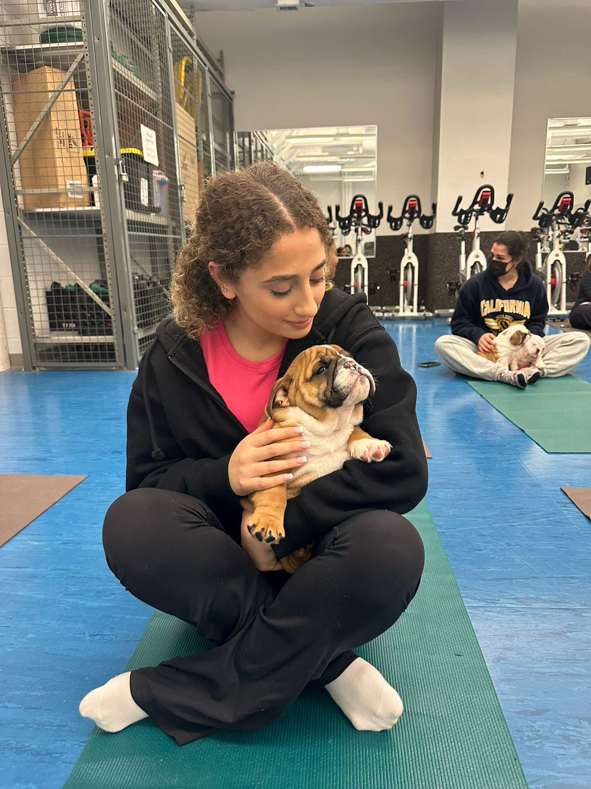
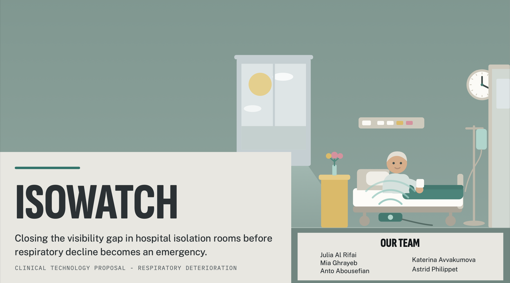
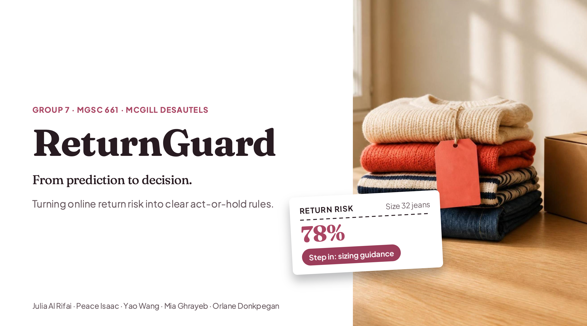
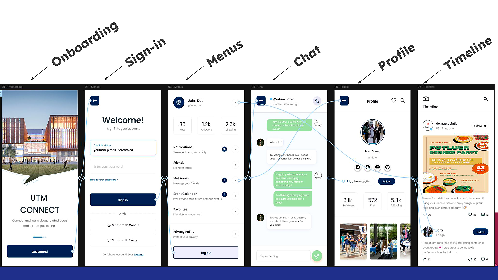
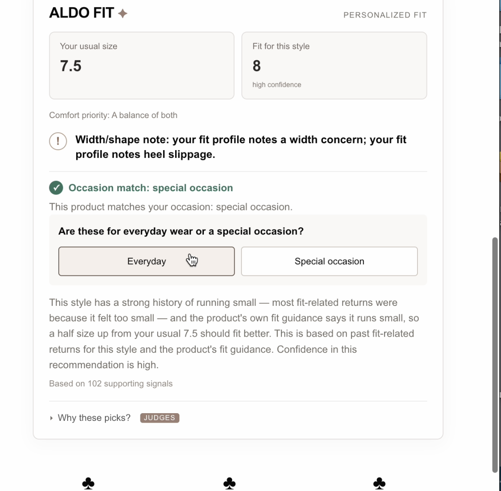
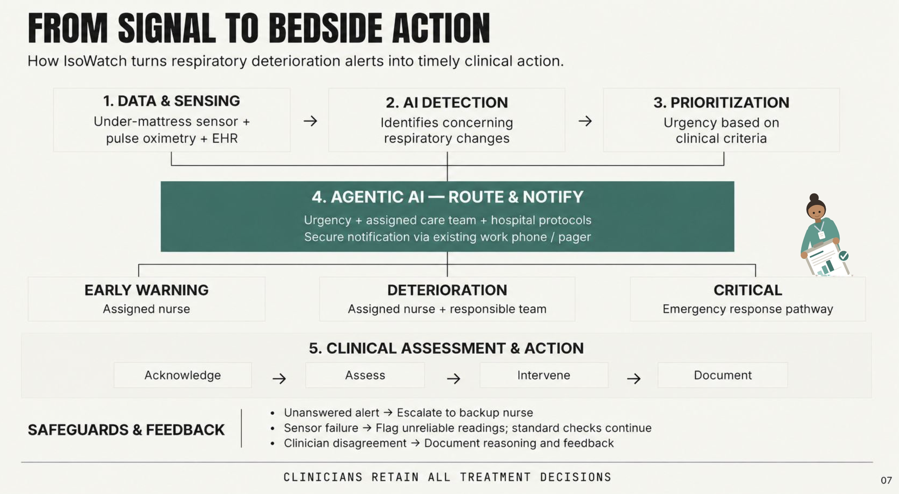
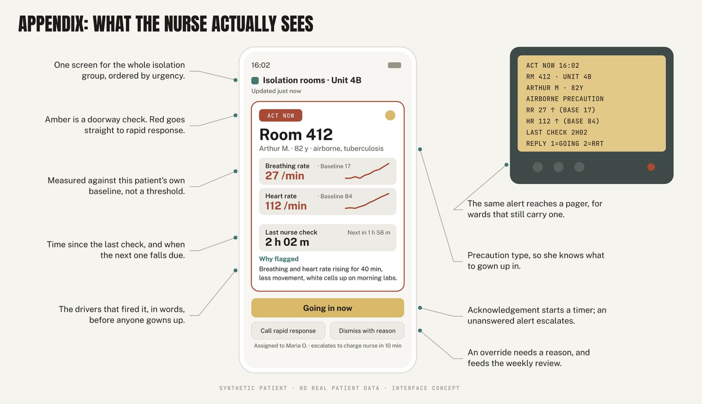
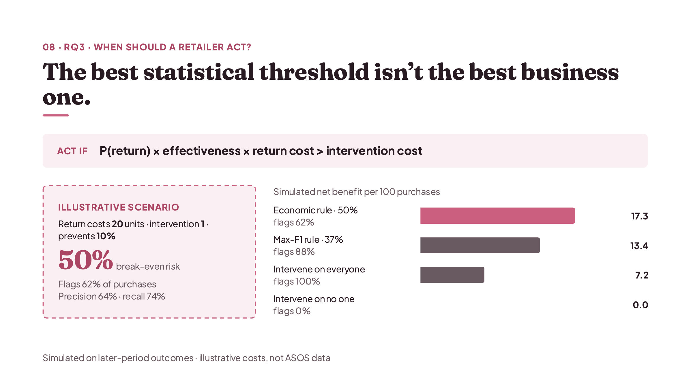

First Place
ALDO FIT
Agentic AI prototype designed to prevent footwear returns before checkout through personalized fit recommendations and product-level insights.
Agentic AI · AWS Bedrock · Product Design
View Project →
Business · Analytics · AI & Technology
I'm currently pursuing a Master of Management in Analytics at McGill University's Desautels Faculty of Management, following my degree in Digital Enterprise Management at the University of Toronto, where I graduated with distinction.
I'm passionate about the intersection of business, data and technology, particularly how organizations can use analytics and emerging technologies to solve problems, improve decision-making and create meaningful business value. My experience spans AI solution development, business analytics, consulting, digital marketing and project management.
Outside of work and academics, I'm a big animal lover and enjoy horseback riding, cooking, travelling and hiking. I'm always excited to explore new places and try new experiences, whether that's jumping out of a plane, discovering life underwater through scuba diving or spending a weekend camping in the mountains.

I'm collaborating with a team to develop an AI-powered knowledge management solution that helps bankers access Salesforce information more efficiently. The project brings together business analysis, AI solution development and knowledge management, from understanding business needs to designing, developing and evaluating the solution.
I worked with a four-person consulting team to translate evolving client needs into branding and design deliverables. Our team delivered six logos and brand guidelines, incorporating stakeholder feedback into recommendations adopted by the client.
Analyzing Google Ads performance helped me identify opportunities for more efficient advertising. By restructuring campaigns and ad groups, I contributed to a 15% reduction in cost per click for a university recruitment campaign. I also researched AI applications in marketing.
I facilitated 20 academic support sessions, adapting my approach to individual student needs. After identifying a gap in ongoing support, I developed a time-management toolkit to help students independently plan, monitor and adjust their study strategies.
As Media Strategy Lead, I used engagement data to guide content and outreach decisions, contributing to a 30% increase in engagement while supporting the promotion of five campus events.
Agentic AI prototype designed to prevent footwear returns before checkout through personalized fit recommendations and product-level insights.
Agentic AI · AWS Bedrock · Product Design
View Project →
Proposed agentic AI system connecting continuous respiratory monitoring with timely clinical response in airborne isolation rooms.
Agentic AI · Systems Design · Clinical Data
View Project →
Machine learning and economic decision analysis to identify return risk and determine when retail interventions are worthwhile.
Python · LightGBM · Decision Analytics
View Project →
Predicted hourly demand using weather and time data; Random Forest achieved R² of 0.812.
Python · Pandas · Scikit-learn
View Project →
Collaboratively designed a 14-table database and developed 20 SQL queries for operational reporting.
SQL · MySQL · Database Design
View Project →
Led project planning and supported MVP development, wireframes and usability testing for a campus event app.
Product Strategy · Figma · UX Testing
View Project →First Place · BSRM × ALDO Retail GenAI Hackathon · October 2026
Business Strategy · AI Solution Design · Product Development
ALDO FIT is an agentic AI-powered footwear recommendation solution designed to prevent avoidable returns before checkout. By combining personalized fit profiles, historical return and exchange patterns, and product-specific information, the solution helps customers make more informed purchasing decisions while providing retailers with actionable product insights.
Traditional online footwear shopping relies heavily on standard size guides, which do not always account for differences in sizing across styles, shoe width, comfort and individual fit preferences. These inconsistencies can lead to avoidable returns, lost sales, additional operational costs and customer dissatisfaction. Our team explored how AI could prevent returns before checkout rather than simply manage them after purchase.
We developed a functional hackathon prototype addressing return prevention at two levels.

Collect relevant fit preferences, usual shoe size, comfort concerns and intended occasion.
Select specialized tools to retrieve product attributes, historical returns and exchanges, reviews and previous recommendation outcomes.
Assess evidence and confidence to recommend a size, flag a fit concern or ask a targeted follow-up question.
Deliver personalized sizing guidance, explain recommendations, suggest alternatives and surface recurring product issues.
The prototype uses an AI agent powered by AWS Bedrock, supported by 10 specialized tools for customer profiling, product information retrieval, fit analysis, alternative recommendations, outcome tracking, quality reporting and human escalation. Unlike a static recommendation system, ALDO FIT dynamically selects tools, evaluates evidence and determines the appropriate next action.
I collaborated across business strategy, AI solution design and product development, focusing on aligning the agent's technical capabilities with customer needs and retail business objectives.
We designed ALDO FIT around customer consent, explainability and human oversight. The solution excludes protected demographic attributes from fit recommendations, communicates uncertainty and operates within defined guardrails. The agent advises rather than independently modifying orders, prices, payments or refunds. We proposed a phased implementation beginning with selected online and in-store channels, evaluating fit-related returns, customer adoption and recommendation outcomes before expansion.
Our proposed next phase extends ALDO FIT into a personalized product discovery experience combining fit profiles, browsing preferences and purchase outcomes to recommend footwear customers are more likely to enjoy and keep.
Our team earned first place at the BSRM × ALDO Retail GenAI Hackathon, presenting a functional prototype demonstrating how agentic AI could connect personalized shopping experiences with data-driven retail decision-making.
Agentic AI · AWS Bedrock · Generative AI · Business Strategy · Product Development · Business Analysis · Retail Analytics · UX Design · Responsible AI · AI Solution Design
Second Place · University of Waterloo × McGill SCOPE AI-Thon · November 2026
End-to-End Solution Design · Agentic AI · Data & AI Strategy
IsoWatch is a proposed AI-enabled respiratory monitoring and clinical response system designed to support earlier detection of patient deterioration in hospital airborne isolation rooms. By integrating continuous physiological monitoring, electronic health records and agentic AI, the solution aims to bridge the gap between identifying early warning signs and coordinating timely clinical intervention.
Patients under airborne infection precautions, such as those being evaluated for tuberculosis, require additional infection-control procedures before healthcare professionals can enter their rooms. The time and operational demands associated with personal protective equipment can make frequent bedside assessments more challenging. Important changes in a patient's respiratory condition may go unnoticed between scheduled observations. Our team explored how continuous monitoring and AI-driven clinical coordination could support earlier intervention while maintaining infection-control protocols and routine nursing care.
We designed a hybrid monitoring and response system combining four key data sources:
Combining these sources addresses limitations associated with relying exclusively on intermittent observations, wearable monitoring or EHR-based prediction.
Our proposed detection approach evaluates sustained changes relative to each patient's individual baseline rather than relying exclusively on isolated measurements or universal thresholds. For example, an increasing respiratory rate combined with declining oxygen saturation could indicate that a patient requires earlier clinical assessment. We prioritized interpretable detection methods to help clinicians understand why a patient was flagged and distinguish meaningful deterioration from unreliable sensor readings. We also assessed MIMIC-IV as a potential resource for retrospective clinical data exploration, identifying limitations in isolation-specific patient labels, general ward representation and continuous sensor data availability. These findings informed our proposed prospective data collection and validation strategy.

Continuous sensor measurements are transmitted through a bedside unit to secure hospital infrastructure, where they are integrated with existing clinical data.
The detection system evaluates respiratory trends, oxygen saturation, patient baselines and signal quality to identify potential deterioration and assess urgency.
The agentic coordinator determines the appropriate recipient based on urgency, care-team assignments and hospital protocols. Early warnings go to the assigned nurse, more serious concerns to the responsible clinical team, and critical events follow established emergency pathways.
Alerts are delivered through secure hospital work phones or pagers. The system tracks acknowledgement and clinical assessment, escalating unanswered alerts to designated backup staff.
Clinicians assess the patient, determine whether intervention is necessary and document the outcome. Clinical feedback and disagreements with alerts can inform future validated improvements.
Rather than simply generating a deterioration warning, IsoWatch's proposed agentic coordinator manages the workflow between detection and clinical response. It uses contextual information to determine who should receive an alert, prioritizes urgency, tracks whether action has been taken and escalates unresolved alerts according to established hospital protocols. Clinical assessment and treatment decisions remain under human control.

My main focus was designing the end-to-end solution, translating AI-driven respiratory deterioration detection into actionable clinical support within existing hospital workflows.
We proposed a phased validation approach beginning with a silent-mode pilot in selected airborne isolation rooms. This would allow hospitals to assess sensor reliability, data integration and potential alert burden before introducing live clinical notifications. The detection approach would be benchmarked against the National Early Warning Score 2 (NEWS2), evaluating:
Following successful feasibility and safety evaluations, the solution could progress to a supervised clinical pilot.
Patient safety, clinical oversight and workflow integration were central to our design. We incorporated proposed safeguards addressing unreliable sensor readings, movement-related artifacts, alarm fatigue, unanswered alerts, patient privacy and potential differences in monitoring accuracy across patient groups. IsoWatch is designed to complement existing nursing assessments and emergency response protocols rather than replace them or independently prescribe treatment.
IsoWatch aims to support earlier recognition of respiratory deterioration, improve clinical response coordination and reduce the risk of delayed intervention. By directing actionable information to the appropriate healthcare professional, the proposed system could help hospitals improve patient safety and prioritize clinical resources while maintaining essential infection-control practices.
Our team earned second place at the SCOPE AI-Thon, presenting an evidence-informed AI solution that connects continuous patient monitoring with coordinated clinical action.
Agentic AI · AI Solution Design · Data Strategy · Requirements Analysis · Systems Design · Workflow Automation · Clinical Data Integration · Responsible AI · Implementation Strategy · Stakeholder Communication
McGill Desautels · Business Analytics · November 2026
Machine Learning · Retail Analytics · Business Decision Optimization
ReturnGuard is a machine learning and decision-support solution designed to help online fashion retailers identify purchases at risk of being returned and determine when preventive interventions are economically worthwhile. Using the ASOS GraphReturns research dataset, our team combined return-risk estimation, statistical analysis and economic decision-making to support targeted retail interventions.
Product returns create shipping expenses, processing costs, inventory disruptions and reduced profitability. Interventions such as sizing guidance, additional product information or alternative recommendations also carry costs and may introduce shopping friction. Our team explored not only whether returns could be predicted, but whether those predictions could inform profitable business decisions.
Can machine learning estimate the probability that a purchase will be returned?
Which customer, product and transaction characteristics are associated with return risk?
Under what economic conditions should a retailer intervene?
We used approximately 2.8 million real-world purchase records across two observation periods, retaining approximately 1.8 million after preparation. A key challenge was ensuring predictors represented information realistically available at checkout. Removing potentially leaky variables reduced AUC from approximately 0.84 to 0.68, providing a more realistic evaluation. We separated predictive features from variables used for association analysis, avoiding contemporaneous return outcomes in prediction.
We compared eight configurations using logistic regression and LightGBM, evaluating feature combinations and predictive performance.
Model selection considered predictive performance, feature availability, probability reliability and implementation feasibility.
Cross-validation AUC
Later-period benchmark AUC
Model configurations compared
Economic scenarios evaluated
Lowest-risk decile — 22.8%
Highest-risk decile — 79%
The selected LightGBM model differentiated higher-risk and lower-risk purchases, supporting targeted intervention strategies.
We conducted multivariable logistic regression with customer-clustered standard errors and Benjamini–Hochberg correction to account for repeated observations and multiple comparisons.
These findings identify areas for further investigation rather than establishing causal relationships.
A high probability of return does not automatically justify intervention. Our economic decision framework incorporates return cost, intervention cost and estimated intervention effectiveness. Intervene only when expected savings exceed intervention cost.
Expected net benefit = Return probability × Intervention effectiveness × Return cost − Intervention cost

We evaluated 100 combinations of costs and effectiveness. Cheap, effective interventions may justify broad action; intermediate conditions favor selective targeting; costly or ineffective interventions may justify no action. In an illustrative scenario with a return cost of 20 units, intervention cost of 1 unit and effectiveness of 10%, the break-even return risk was 50%.
Economic decision rule
Maximum-F1 threshold
Intervene on all
Intervene on none
Simulated net benefit per 100 purchases, using illustrative costs rather than actual ASOS operating costs. Optimizing statistical performance does not necessarily maximize business value.
We developed a scenario exploration prototype that allows retailers to adjust economic assumptions and evaluate intervention thresholds without retraining the predictive model. Potential applications include sizing guidance, additional product information and alternative recommendations. The framework separates risk prediction from the business decision of whether intervention is worthwhile.
I collaborated across the analytical and business components of ReturnGuard, contributing to a machine learning solution that connects predictive insights with practical retail decision-making.
Missing purchase timestamps limited historical features, and price and discount proxies require confirmation of checkout availability. Performance varied across markets and new products. The later-period benchmark had already been inspected, so independent validation on a new period is needed. Deployment would also require retailer-specific recalibration and controlled A/B testing to establish actual intervention effectiveness and customer outcomes.
Python · Pandas · NumPy · Scikit-learn · LightGBM · Logistic Regression · Statsmodels · Feature Engineering · Predictive Analytics · Statistical Inference · Probability Calibration · Business Decision Optimization · Scenario Analysis
This project predicts hourly bike-sharing demand using historical rental, weather and calendar data to support bike availability and operational planning. The analysis covers exploratory analysis, feature engineering, model development, validation, tuning and evaluation.
The dataset contains 10,886 hourly observations. The target is total hourly rentals. Casual and registered rental counts were excluded because they are components of the target and would introduce target leakage.
Extracted hour, day of week, month and year from datetime. Numerical features were scaled and categorical features one-hot encoded through a preprocessing pipeline.
I trained Linear Regression as a baseline and Random Forest to capture nonlinear demand patterns. Chronological train/test splitting and time-series cross-validation preserved temporal ordering. Grid Search and Randomized Search evaluated alternative configurations; the original Random Forest performed best among those tested. Training and validation errors indicated remaining overfitting.
| Metric | Linear Regression | Random Forest |
|---|---|---|
| Test RMSE | 131.27 | 94.44 |
| Test MAE | 98.38 | 62.75 |
| Test R² | 0.636 | 0.812 |
Random Forest explained approximately 81% of test-set demand variation. Its test RMSE of 94.44 was close to the mean time-series cross-validation RMSE of 93.22.
Feels-like temperature, commuting hours, humidity, year and working-day status were important predictors. These patterns could support anticipation of high-demand periods and bike availability planning. Feature importance does not establish causality.
Python · Pandas · NumPy · Scikit-learn · Matplotlib · Jupyter · Feature Engineering · Random Forest · Time-Series Cross-Validation · Hyperparameter Tuning
View Python Notebook →ACME Simulators is a relational database design project supporting a company that develops customized driving simulators. Each customer project combines a vehicle model, simulator platform and configuration-specific requirements. Our four-person McGill team translated operational requirements into a structured database and developed 20 SQL queries.
We designed and implemented 14 interconnected tables covering products, platforms, customer projects, configuration options, technical documentation, versioning, approvals, change tracking and testing. The implementation includes integrity constraints and sample records.
The queries support operational reporting and configuration-specific workflows.
Collaborated across business requirements analysis, relational database design, SQL implementation and query development as part of the four-person team.
SQL · MySQL · Relational Database Design · Entity-Relationship Modeling · Normalization · Primary and Foreign Keys · Joins · Aggregations · Subqueries · Business Requirements Analysis
View SQL Implementation →UTM Connect is a student-focused campus event discovery app designed to centralize academic, extracurricular and social activities at the University of Toronto Mississauga. Our team developed and tested an academic prototype in 2024.
Students rely on disconnected social media accounts, club pages and promotional materials to discover events. We proposed a centralized platform for students to discover opportunities and organizers to promote activities.
We translated student and organizer needs into product requirements, prioritizing onboarding, event browsing and event submission. Additional features explored included search and filtering by category, date and location, user profiles and personalized navigation.
I led project planning and coordination, balancing user needs, team responsibilities and development constraints.
Participants completed tasks involving registration, login, event submission, search and filtering. We evaluated navigation, interface clarity and ease of task completion to inform prototype refinements.
Figma supported interface design and Thunkable supported prototype development. Some planned features required further refinement.
The proposed platform aimed to improve access to campus events and give student organizations a centralized promotion channel. The project demonstrates requirements analysis, feature prioritization and iterative product development.
Project Management · Product Strategy · Business Analysis · Figma · Thunkable · Usability Testing